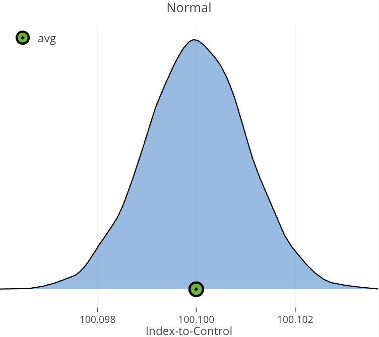
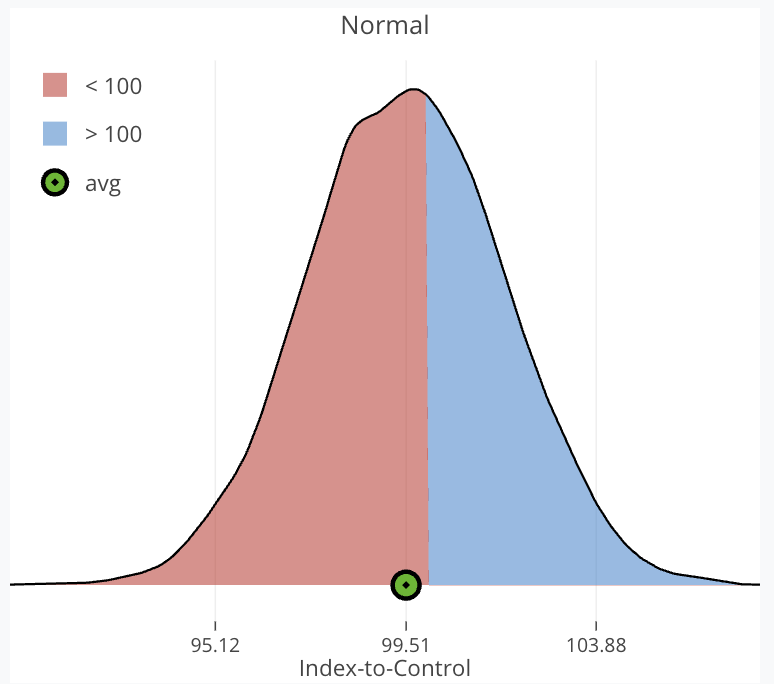

The Value of Transformational AB Tests
Small Wins or Big Swings: Which Delivers More Value?
TL/DR
A/B testing is a tool for driving business outcomes like conversion, retention, and revenue. But in practice, experimenters often face a strategic dilemma:
- Play it safe with frequent, incremental wins
- Swing big with fewer, riskier tests that promise outsized returns
This tradeoff is well-known in the experimentation community — a recurring challenge when traffic is limited and the stakes are high.
This paper compares two strategies:
- Guaranteed Small Wins — ten low-risk bets with small, consistent gains
- Transformational Tests — a single high-variance bet that could flop — or deliver a breakthrough
Which strategy delivers more value on average?
Experiment Design
To ground this comparison in a concrete scenario, I define a base experiment with the following parameters:
| Min (Test Days) | Max (Test Days) | Max (Test N) | Post Test N | Baseline | Split |
|---|---|---|---|---|---|
| 7 | 20 | 80,000 | 500,000 | 65% | 50/50 |
This setup reflects a common A/B testing environment: experiments run between 7 and 20 days, with a capped sample size during the test phase, followed by rollout to a larger post-test population.
To evaluate strategic tradeoffs, I simulate two competing approaches:
- Guaranteed Small Wins: Ten low-risk experiments, each drawing from a tightly clustered distribution of small positive effects.
- One Transformational Experiment: A single, riskier test drawing from a broader distribution with higher variance, including both harmful and high-upside ideas.
Distribution of Guaranteed Small Wins

- Effects densely packed around 100.1
- Only small positive effects
Distribution of Transformational Experiment

- μ = 99.5, σ = 2.25
- 60% harmful ideas
- High upside potential
Simulation Framework
To evaluate these strategies, I simulate 30,000 randomized A/B tests in each of two distinct distributions: one representing Guaranteed Wins, with tightly clustered positive effects just above baseline, and one representing Transformational Ideas, with a wider spread, higher upside, and meaningful downside.
Each simulation samples a random true effect from its distribution, while decisions are made using noisy, observed outcomes — mirroring real-world test uncertainty. Final comparisons focus on average marginal impact.
Definition
A measure that quantifies the risk of making the wrong decision, combining both the likelihood of harm and its expected magnitude:
\[ \text{Expected Loss} = \Pr(\text{harm}) \times \mathbb{E}[\text{Magnitude of Harm}] \]
We’ll refer to expected loss simply as Risk. This is used as a stopping criteria below.
Evaluation Approach
- For each simulation, and each day on or after
Min (Test Days):- Compute Risk (expected loss) for both control and treatment conditions.
- Compare each condition’s Risk to the Risk Threshold = 0.025%.
- Decision rules:
- If only one condition breaches the threshold → select it as the winner.
- If both breach → choose the condition with the lower risk.
- If neither breaches by the end of the test → select the condition with the lowest final risk.
- After selecting a winner:
- Simulate rolling out the winner to the remaining test population and the post-test population, regardless of whether it was truly best.
Results
All metrics shown are based on 30,000 simulations and represent expected values, i.e., average outcomes aggregated across all simulated experiments — with each simulation drawing a random treatment effect from its distribution of effects.
| Metric | One Guaranteed Win Experiment | One Transformational Experiment |
|---|---|---|
| Risk Threshold | 0.025% | 0.025% |
| Selected Best Condition | 57.69% | 58.56% |
| Marginal Events vs No Test | 216 | 2,261 |
| Projected Mean @ Year-End | 65.037% | 65.390% |
| Mean Bayesian Test | N = 59,516 (15 days) | N = 38,713 (10 days) |
On average, ten guaranteed-win experiments produce ~2,160 marginal events — but require ~5.8 million users across the full test and post-test lifecycle.
One transformational experiment delivers a comparable ~2,261 marginal events on average, using just 580k users and completing 33% faster.
While both strategies yield similar impact on average, transformational testing is far more efficient — achieving comparable value with one-tenth the traffic on average.
Home Runs Outweigh Strikeouts
How can a strategy with a 60% strikeout rate still outperform?
Because when a transformational idea hits, it hits big. Risk-based testing helps cut losses early while allowing strong performers to scale — letting a single home run outweigh several duds.
That’s the asymmetric nature of upside: most variants may underperform, but the rare wins more than make up the difference.
Risk-based testing makes transformational strategies more efficient and impactful — a single high-performing variant can easily outweigh multiple duds, justifying the risk.
Conclusion
Both strategies yield similar marginal impact on average — but transformational testing is far more efficient, requiring fewer users, less time, and fewer tests to achieve comparable results.
While riskier, the upside of transformational experiments dramatically outweighs the downside when paired with a smart decision framework. In environments where time and traffic are limited, this efficiency becomes a strategic advantage.
Recommendation
Favor transformational tests when possible because they unlock greater value per user and per test.
That said, a hybrid approach can provide balance: guaranteed wins deliver stability and coverage, while bold swings create room for breakthrough gains. Together, they offer a path that scales.
About Me
I work on experimentation systems, Bayesian optimization, and simulation-driven decision-making. My recent work includes Bayesian long-term optimization, informed priors, and CUPED.
If you’re thinking about experimentation strategy, simulation design, or testing frameworks — I’d love to connect. Always happy to trade ideas or dig deeper into what drives meaningful impact.
📩 Email: rzaliznyak@gmail.com